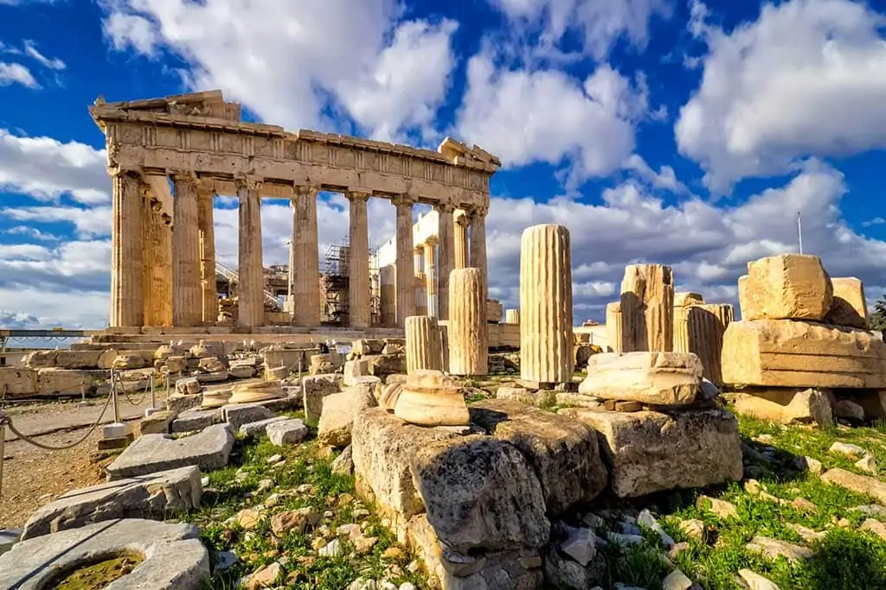

One of the main reasons travelers visit Greece is its incredible history and famous ancient landmarks. Greece is often called the birthplace of Western civilization because it played a huge role in developing democracy, philosophy, science, and the arts. Visitors can explore ancient ruins that are thousands of years old and imagine what life was like in the ancient world. A famous site in Athens is the Parthenon, a magnificent temple that stands on the Acropolis hill overlooking the city. Built in the 5th century BCE, it was dedicated to the goddess Athena and remains one of the most recognizable symbols of Greece. Walking around the Acropolis allows travelers to see impressive marble columns, ancient carvings, and breathtaking views of Athens. Historical sites like this make Greece a dream destination for people who love history, architecture, and culture.
Greece is not only famous for its ancient monuments but also for its stunning landscapes and outdoor experiences. The country has beautiful mountains, beaches, islands, and forests that attract nature lovers from all over the world. One of the most legendary natural locations is Mount Olympus, the tallest mountain in Greece and an important symbol in Greek mythology. According to ancient myths, Mount Olympus was believed to be the home of the Greek gods, including Zeus, Hera, and Athena. Today, the mountain is part of a national park and is a popular destination for hikers and climbers. Visitors can explore scenic trails, see unique wildlife, and enjoy incredible views of the surrounding valleys and the Aegean Sea. The combination of mythological importance and natural beauty makes Mount Olympus an unforgettable destination for travelers who enjoy adventure and exploration.
Another reason Greece is a popular travel destination is its vibrant culture and delicious food. Greek cuisine is known for its fresh ingredients, rich flavors, and traditional recipes that have been passed down for generations. One of the most famous dishes visitors often try is Moussaka. Moussaka is typically made with layers of eggplant, seasoned ground meat, and creamy béchamel sauce baked together to create a hearty and flavorful meal. Restaurants across Greece serve this dish along with other favorites like souvlaki, fresh seafood, olives, and Greek salad. Dining in Greece is often a social experience where friends and family gather around the table to share food and conversation. Travelers often say that tasting authentic Greek food is one of the highlights of their trip. Beyond the food, visitors also enjoy the relaxed lifestyle and welcoming atmosphere of Greek cities and islands. Cafés line the streets where people spend hours talking, drinking coffee, and enjoying the view. Festivals, music, and local traditions are an important part of everyday life. Travelers can explore colorful markets, small seaside villages, and lively city neighborhoods. Whether someone is walking along the coast, watching the sunset over the sea, or listening to traditional music in a local restaurant, Greece offers experiences that allow visitors to connect with the culture and the people. Overall, Greece stands out as an amazing travel destination because it combines history, natural beauty, and rich cultural traditions. From exploring ancient landmarks like the Parthenon, to hiking the legendary Mount Olympus, to enjoying traditional dishes like moussaka, visitors can experience many different sides of the country. The warm climate, beautiful scenery, and friendly culture make Greece a place that many travelers dream of visiting. Whether someone is interested in history, outdoor adventure, or simply relaxing by the sea, Greece offers unforgettable experiences that keep people coming back year after year.
To plan your next trip, Click Here